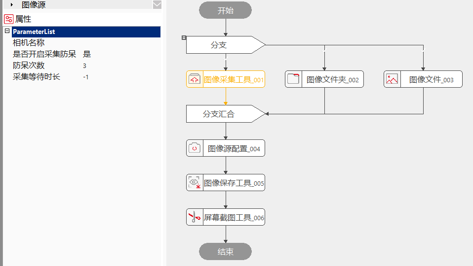

Dùng để thu nhận hình ảnh từ camera được kết nối. Nếu có nhiều camera kết nối, có thể chọn tên (hoặc số sê-ri) của camera tương ứng để lấy ảnh.
Được sử dụng trong các tình huống cần lấy hình ảnh theo thời gian thực hoặc lấy hình ảnh một cách linh hoạt khi cần.
Sau khi kết nối camera, có thể thiết lập các tham số như tốc độ khung hình (frame rate), thời gian phơi sáng (exposure), độ khuếch đại (gain), Gamma, v.v… và sử dụng chế độ kích hoạt nội bộ hoặc kích hoạt phần cứng để thu nhận hình ảnh. Khi quá trình thu nhận không ổn định, có thể sử dụng chức năng “chống lỗi” để thu lại.

Thêm công cụ thu nhận hình ảnh vào dự án, nhấp vào danh sách thả xuống ở mục tên camera để chọn camera đang trực tuyến. Lúc này sẽ xuất hiện tùy chọn “sử dụng tham số độc lập”. Nếu trong quá trình lấy hình ảnh, cần các tham số gain, exposure, Gamma và tham số camera khác nhau thì chọn “Có”. Nếu việc tùy chỉnh tham số không tạo khác biệt đáng kể, nên chọn “Không”. Nếu kết nối camera tại hiện trường không ổn định, hãy bật “Chống lỗi thu nhận” bằng cách chọn “Có”. Nếu kết nối ổn định, có thể chọn “Không”.
| Mô tả hiện tượng | Giải pháp |
|---|---|
| Hình ảnh camera bị lỗi, xuất hiện sọc đen; quá trình thu nhận thất bại, phần mềm (mô-đun camera) bị treo; không nhận được camera; tốc độ khung hình không đạt tiêu chuẩn; công cụ thu nhận bị đơ; kích hoạt phần cứng cho kết quả ảnh đen hoặc nhiễu hình, v.v… | Xem phần FAQ |
| Thu nhận không ổn định, bị mất kết nối | 1. Kiểm tra kết nối camera; 2. Bật chức năng chống lỗi. |
| Tên tham số | Giải thích |
|---|---|
| Tên camera | Tên của camera thu nhận hình ảnh, còn gọi là số sê-ri. |
| Có sử dụng tham số độc lập hay không | Nếu không sử dụng tham số độc lập, hệ thống sẽ lấy ảnh theo tham số mặc định ban đầu của camera. Nếu chọn “Có”, cần thiết lập thủ công gain và thời gian phơi sáng. |
| Độ khuếch đại (Gain) | Khi sử dụng tham số độc lập, đây là độ khuếch đại của camera, đơn vị dB (decibel). |
| Phơi sáng (Exposure) | Khi sử dụng tham số độc lập, đây là thời gian phơi sáng của camera, đơn vị mili giây (ms). |
| Gamma | Dùng để điều chỉnh độ tương phản hình ảnh. |
| Bật chức năng chống lỗi | Thiết lập trạng thái và chế độ của camera trong trường hợp hoạt động không ổn định. |
| Số lần chống lỗi | Số lần thử khắc phục kết nối camera khi không ổn định, mặc định là 3 lần. |
| Thời gian chờ thu nhận | Giá trị -1 nghĩa là chờ vô thời hạn; nếu lớn hơn -1, đó là thời gian chờ (đơn vị: mili giây). |
| Tên tham số | Giải thích |
|---|---|
| Dữ liệu hình ảnh | Gồm kích thước và độ phân giải của hình ảnh. |
| Kết quả thực thi | Kết quả chạy của công cụ. |
| Thời gian thực thi | Thời gian công cụ hoàn thành tác vụ. |
| Hình ảnh đầu ra | Hình ảnh đã được thu nhận. |
参见“\Samples\图像源配置工具.gvp”。